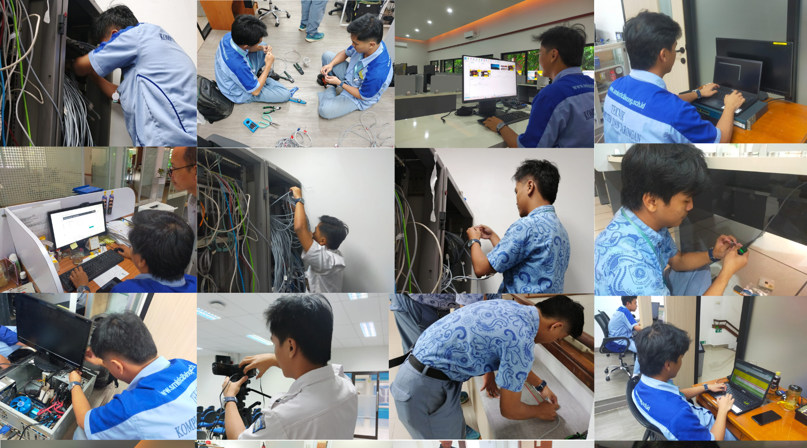

 Welcome to my website
Welcome to my website
Fauzan Atarsyah
Dengan latar belakang di bidang IT, Saya menggabungkan logika teknologi dengan imajinasi sastra.
6+
Months Experience
1
Projects Done
1
Happy Clients